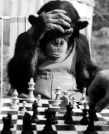
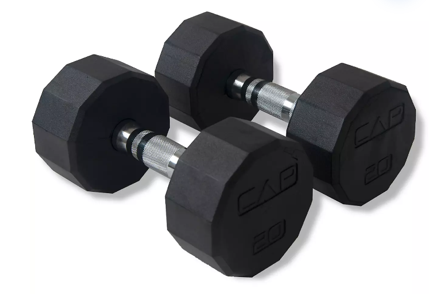
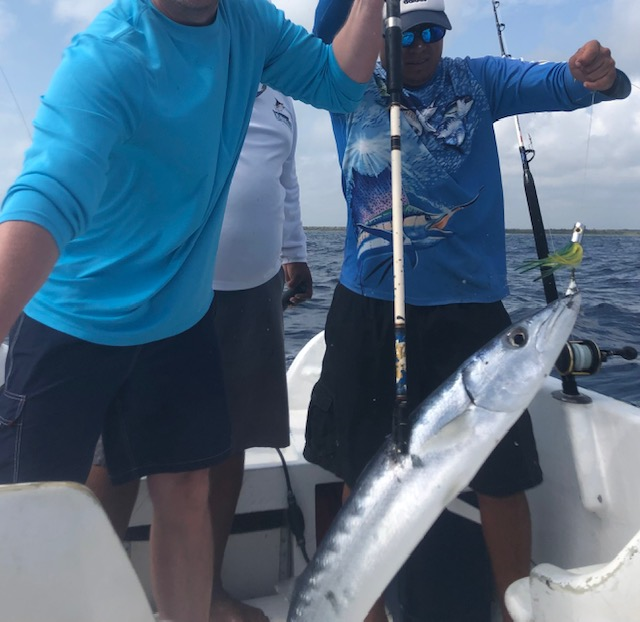

About Me
In my free time I enjoy playing chess, exercising, and saltwater fishing.
Chess
Chess is my favorite boardgame. I enjoy spending my Saturday mornings drinking a cup of coffee and playing a traditional over-the-board game of chess.
Exercising
Late 2022 I sprained the medial collateral ligament (MCL) in my left knee. It hurt, a lot. I spent days in bed with my knee iced and raised. When I was able, I started exercising to help my knee recover. Slowly I incorporated a full-body workout into my workout routine. After seeing some positive results, I decided to eat healthier as well. Now I exercise three times a week and monitor my diet via my FitBit app. Since my injury, I've lost at least twenty pounds and I feel a lot better overall. Surprisingly, injuring my knee has actually helped me become healthier.
Fishing
If I'm not working, playing chess, or exercising, I'm probably fishing somewhere in the Gulf of Mexico. Fishing brings me peace and also excitement. Nothing like a day fishing.
